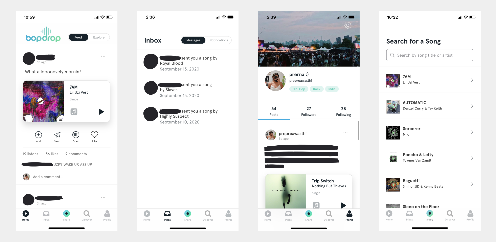
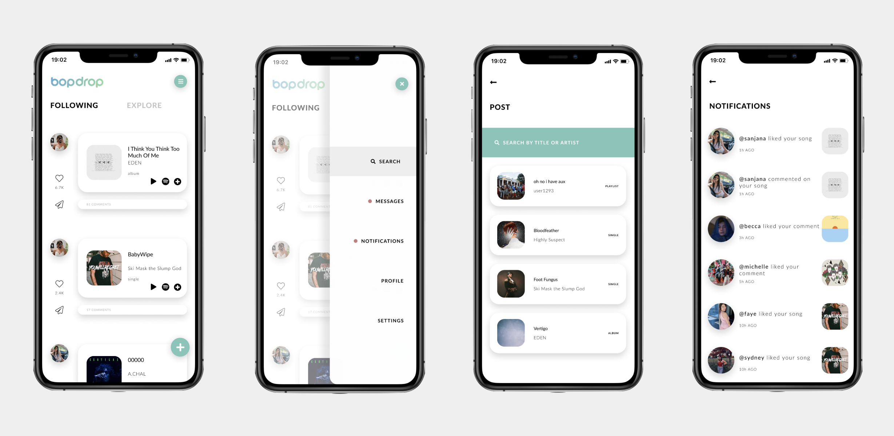

Revamping a social music sharing mobile application.
UX Design / 2022 / Personal Project

A little about the project
While Bopdrop is a unique app and its basic layout and functionality work, there was room for improvement that I and other users saw. The point of the app is to share music and connect with others through doing so. The visual language and parts of the functionality, however, do not showcase that to the full possible extent.
My primary goal with this redesign was to clean up the interface to place more emphasis on the music sharing aspect. Though not fully possible with a mockup, I also wanted to allow for more formats of music to be shared, beyond just songs.
Side note: My work is just for my own creative exploration and not at all a suggestion to abandon their existing interface! I don't work for them, so I obviously don't have an exhaustive understanding of their decisions.
What are users saying?
I conducted a survey with five users. Users primarily used the app to connect with others and to share and discover new music. The posting and following/explore pages were most used; currently, posts are limited to songs, and do not allow for sharing playlists or albums, and as a music sharing app, that functionality would greatly improve the app experience. The least used feature mentioned was the discover section and messaging, but even so, the latter is required to pass through to get to notifications and the former takes up a prominent spot in the footer.
How might we address these challenges?
I wanted to clean up the layout, but didn't want to make it needlessly minimal or somehow make it less effective in the process. Ultimately, I decided on a few key goals: adding the aforementioned functionalities, decluttering other parts of the app to make it easier to navigate, and drawing the focus to features that are used most (the home and share tabs, and the profile tab). I also wanted to make some amendments within those sections by making some parts of the post smaller and turning the navigaiton into overlays instead of having a footer like it does now.
Wireframes

Developing the protoype
After gathering some feedback on the wireframes and IA, I created higher-fidelity screens. The majority of my work was essentially just organising the information architecture and making it more intuitive. I divided the footer into a notifications tab and a new post icon, since users used those more than other features. I also divided each page of the app into its own menu button to make them more directly accessible. Finally, I cleaned up the messaging layout and alluded to the option of sharing albums and playlists, which most users pointed to as a potential improvement.
What did I learn?
✽ This was my first attempt at redesigning an application, and a challenge for me to see through a personal project. I learned a lot throughout this task–both about Figma and UX processes, as well as about my own creativity.
What's next?
✽ My research methods could have been more thorough; to make up for that and identify its success and potential usability issues, I think evaluating my design with current Bopdrop users and iterating it based on those results would be a beneficial (and necessary) next step.